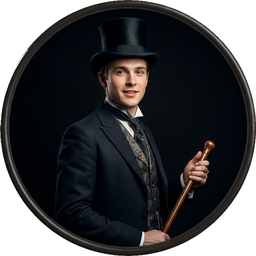

Cast of Characters
Click to hear their voice

STORY OF THE DOOR
Mr. Utterson the lawyer was a man of a rugged countenance that was never lighted by a smile; cold, scanty and embarrassed in discourse; backward in sentiment; lean, long, dusty, dreary and yet somehow lovable. At friendly meetings, and when the wine was to his taste, something eminently human beaconed from his eye; something indeed which never found its way into his talk, but which spoke not only in these silent symbols of the after-dinner face, but more often and loudly in the acts of his life. He was austere with himself; drank gin when he was alone, to mortify a taste for vintages; and though he enjoyed the theatre, had not crossed the doors of one for twenty years. But he had an approved tolerance for others; sometimes wondering, almost with envy, at the high pressure of spirits involved in their misdeeds; and in any extremity inclined to help rather than to reprove. “I incline to Cain’s heresy,” he used to say quaintly: “I let my brother go to the devil in his own way.” In this character, it was frequently his fortune to be the last reputable acquaintance and the last good influence in the lives of downgoing men. And to such as these, so long as they came about his chambers, he never marked a shade of change in his demeanour.
No doubt the feat was easy to Mr. Utterson; for he was undemonstrative at the best, and even his friendship seemed to be founded in a similar catholicity of good-nature. It is the mark of a modest man to accept his friendly circle ready-made from the hands of opportunity; and that was the lawyer’s way. His friends were those of his own blood or those whom he had known the longest; his affections, like ivy, were the growth of time, they implied no aptness in the object. Hence, no doubt the bond that united him to Mr. Richard Enfield, his distant kinsman, the well-known man about town. It was a nut to crack for many, what these two could see in each other, or what subject they could find in common. It was reported by those who encountered them in their Sunday walks, that they said nothing, looked singularly dull and would hail with obvious relief the appearance of a friend. For all that, the two men put the greatest store by these excursions, counted them the chief jewel of each week, and not only set aside occasions of pleasure, but even resisted the calls of business, that they might enjoy them uninterrupted.
It chanced on one of these rambles that their way led them down a by-street in a busy quarter of London. The street was small and what is called quiet, but it drove a thriving trade on the weekdays. The inhabitants were all doing well, it seemed, and all emulously hoping to do better still, and laying out the surplus of their gains in coquetry; so that the shop fronts stood along that thoroughfare with an air of invitation, like rows of smiling saleswomen. Even on Sunday, when it veiled its more florid charms and lay comparatively empty of passage, the street shone out in contrast to its dingy neighbourhood, like a fire in a forest; and with its freshly painted shutters, well-polished brasses, and general cleanliness and gaiety of note, instantly caught and pleased the eye of the passenger.
Two doors from one corner, on the left hand going east the line was broken by the entry of a court; and just at that point a certain sinister block of building thrust forward its gable on the street. It was two storeys high; showed no window, nothing but a door on the lower storey and a blind forehead of discoloured wall on the upper; and bore in every feature, the marks of prolonged and sordid negligence. The door, which was equipped with neither bell nor knocker, was blistered and distained. Tramps slouched into the recess and struck matches on the panels; children kept shop upon the steps; the schoolboy had tried his knife on the mouldings; and for close on a generation, no one had appeared to drive away these random visitors or to repair their ravages.
Mr. Enfield and the lawyer were on the other side of the by-street; but when they came abreast of the entry, the former lifted up his cane and pointed.
“Did you ever remark that door?” he asked; and when his companion had replied in the affirmative, “It is connected in my mind,” added he, “with a very odd story.”
“Indeed?” said Mr. Utterson, with a slight change of voice, “and what was that?”
“Well, it was this way,” returned Mr. Enfield: “I was coming home from some place at the end of the world, about three o’clock of a black winter morning, and my way lay through a part of town where there was literally nothing to be seen but lamps. Street after street and all the folks asleep—street after street, all lighted up as if for a procession and all as empty as a church—till at last I got into that state of mind when a man listens and listens and begins to long for the sight of a policeman. All at once, I saw two figures: one a little man who was stumping along eastward at a good walk, and the other a girl of maybe eight or ten who was running as hard as she was able down a cross street. Well, sir, the two ran into one another naturally enough at the corner; and then came the horrible part of the thing; for the man trampled calmly over the child’s body and left her screaming on the ground. It sounds nothing to hear, but it was hellish to see. It wasn’t like a man; it was like some damned Juggernaut. I gave a few halloa, took to my heels, collared my gentleman, and brought him back to where there was already quite a group about the screaming child. He was perfectly cool and made no resistance, but gave me one look, so ugly that it brought out the sweat on me like running. The people who had turned out were the girl’s own family; and pretty soon, the doctor, for whom she had been sent, put in his appearance. Well, the child was not much the worse, more frightened, according to the sawbones; and there you might have supposed would be an end to it. But there was one curious circumstance. I had taken a loathing to my gentleman at first sight. So had the child’s family, which was only natural. But the doctor’s case was what struck me. He was the usual cut and dry apothecary, of no particular age and colour, with a strong Edinburgh accent and about as emotional as a bagpipe. Well, sir, he was like the rest of us; every time he looked at my prisoner, I saw that sawbones turn sick and white with the desire to kill him. I knew what was in his mind, just as he knew what was in mine; and killing being out of the question, we did the next best. We told the man we could and would make such a scandal out of this as should make his name stink from one end of London to the other. If he had any friends or any credit, we undertook that he should lose them. And all the time, as we were pitching it in red hot, we were keeping the women off him as best we could for they were as wild as harpies. I never saw a circle of such hateful faces; and there was the man in the middle, with a kind of black sneering coolness—frightened too, I could see that—but carrying it off, sir, really like Satan. ‘If you choose to make capital out of this accident,’ said he, ‘I am naturally helpless. No gentleman but wishes to avoid a scene,’ says he. ‘Name your figure.’ Well, we screwed him up to a hundred pounds for the child’s family; he would have clearly liked to stick out; but there was something about the lot of us that meant mischief, and at last he struck. The next thing was to get the money; and where do you think he carried us but to that place with the door?—whipped out a key, went in, and presently came back with the matter of ten pounds in gold and a cheque for the balance on Coutts’s, drawn payable to bearer and signed with a name that I can’t mention, though it’s one of the points of my story, but it was a name at least very well known and often printed. The figure was stiff; but the signature was good for more than that if it was only genuine. I took the liberty of pointing out to my gentleman that the whole business looked apocryphal, and that a man does not, in real life, walk into a cellar door at four in the morning and come out with another man’s cheque for close upon a hundred pounds. But he was quite easy and sneering. ‘Set your mind at rest,’ says he, ‘I will stay with you till the banks open and cash the cheque myself.’ So we all set off, the doctor, and the child’s father, and our friend and myself, and passed the rest of the night in my chambers; and next day, when we had breakfasted, went in a body to the bank. I gave in the cheque myself, and said I had every reason to believe it was a forgery. Not a bit of it. The cheque was genuine.”
“Tut-tut!” said Mr. Utterson.
“I see you feel as I do,” said Mr. Enfield. “Yes, it’s a bad story. For my man was a fellow that nobody could have to do with, a really damnable man; and the person that drew the cheque is the very pink of the proprieties, celebrated too, and (what makes it worse) one of your fellows who do what they call good. Blackmail, I suppose; an honest man paying through the nose for some of the capers of his youth. Black Mail House is what I call the place with the door, in consequence. Though even that, you know, is far from explaining all,” he added, and with the words fell into a vein of musing.
From this he was recalled by Mr. Utterson asking rather suddenly: “And you don’t know if the drawer of the cheque lives there?”
“A likely place, isn’t it?” returned Mr. Enfield. “But I happen to have noticed his address; he lives in some square or other.”
“And you never asked about the—place with the door?” said Mr. Utterson.
“No, sir; I had a delicacy,” was the reply. “I feel very strongly about putting questions; it partakes too much of the style of the day of judgment. You start a question, and it’s like starting a stone. You sit quietly on the top of a hill; and away the stone goes, starting others; and presently some bland old bird (the last you would have thought of) is knocked on the head in his own back garden and the family have to change their name. No sir, I make it a rule of mine: the more it looks like Queer Street, the less I ask.”
“A very good rule, too,” said the lawyer.
“But I have studied the place for myself,” continued Mr. Enfield. “It seems scarcely a house. There is no other door, and nobody goes in or out of that one but, once in a great while, the gentleman of my adventure. There are three windows looking on the court on the first floor; none below; the windows are always shut but they’re clean. And then there is a chimney which is generally smoking; so somebody must live there. And yet it’s not so sure; for the buildings are so packed together about the court, that it’s hard to say where one ends and another begins.”
The pair walked on again for a while in silence; and then “Enfield,” said Mr. Utterson, “that’s a good rule of yours.”
“Yes, I think it is,” returned Enfield.
“But for all that,” continued the lawyer, “there’s one point I want to ask. I want to ask the name of that man who walked over the child.”
“Well,” said Mr. Enfield, “I can’t see what harm it would do. It was a man of the name of Hyde.”
“Hm,” said Mr. Utterson. “What sort of a man is he to see?”
“He is not easy to describe. There is something wrong with his appearance; something displeasing, something down-right detestable. I never saw a man I so disliked, and yet I scarce know why. He must be deformed somewhere; he gives a strong feeling of deformity, although I couldn’t specify the point. He’s an extraordinary looking man, and yet I really can name nothing out of the way. No, sir; I can make no hand of it; I can’t describe him. And it’s not want of memory; for I declare I can see him this moment.”
Mr. Utterson again walked some way in silence and obviously under a weight of consideration. “You are sure he used a key?” he inquired at last.
“My dear sir...” began Enfield, surprised out of himself.
“Yes, I know,” said Utterson; “I know it must seem strange. The fact is, if I do not ask you the name of the other party, it is because I know it already. You see, Richard, your tale has gone home. If you have been inexact in any point you had better correct it.”
“I think you might have warned me,” returned the other with a touch of sullenness. “But I have been pedantically exact, as you call it. The fellow had a key; and what’s more, he has it still. I saw him use it not a week ago.”
Mr. Utterson sighed deeply but said never a word; and the young man presently resumed. “Here is another lesson to say nothing,” said he. “I am ashamed of my long tongue. Let us make a bargain never to refer to this again.”
“With all my heart,” said the lawyer. “I shake hands on that, Richard.”